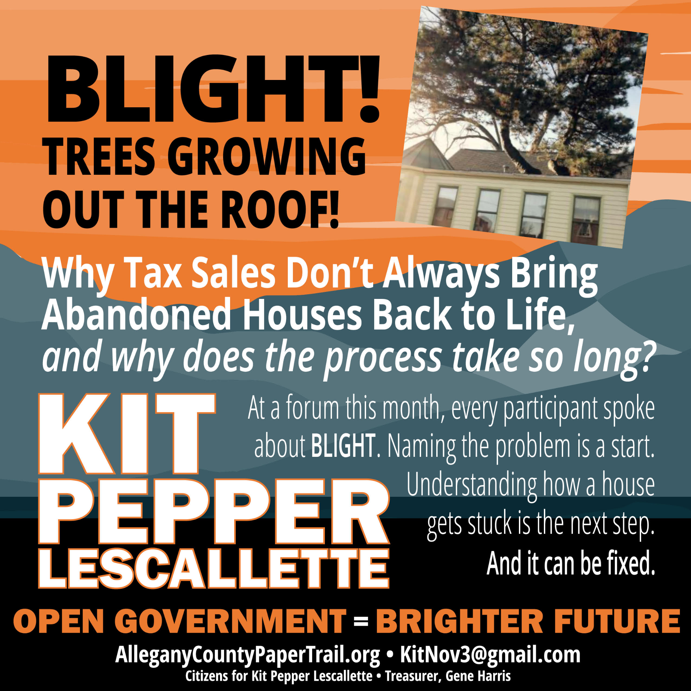

Cumberland could explore a program to lend that amount to qualified purchasers. The funds would be paid directly to Allegany County, which handles the tax sale and collects the remaining payment, even for houses within Cumberland. The payment, transfer of ownership and recording of a lien protecting the city’s loan would be arranged together.
Blight
Trees Through the Roof: Why Tax Sales Don’t Always Bring Abandoned Houses Back to Life

At the City of Cumberland mayor and council candidate forum earlier this month, sponsored by the Chamber of Commerce, every participant spoke about blight. The word was used too many times to count.
If we're going to find a community solution, everyone needs a better understanding of the process, the barriers that exist, and the varied reasons we have abandoned homes. Naming the problem is a beginning. Understanding how a house gets stuck, and what might move it forward, is the next step.
“There are trees growing out the windows or through the roof.”
That is the kind of abandoned house we are talking about here. A house that has deteriorated far beyond needing paint or a new porch. A house that cannot be legally occupied without substantial repairs, while its condition continues to affect the neighbors and the surrounding community.
Residents may reasonably ask: If someone bought it at a tax sale, why is it still sitting there years later?
There are several reasons. But one possible solution could prevent some houses from getting stuck: a loan that helps the tax sale purchaser finish buying the property, with a binding schedule for repairing it. The city could explore providing that loan, or the county could explore financing the remaining payment itself. More about those possibilities later.
First, it helps to understand what the purchaser actually bought, and why the certificate was offered for sale in the first place.
The certificate is offered for sale because property taxes or other charges that can legally be collected through a tax sale, such as certain water and sewer charges, have gone unpaid. In Maryland, a tax certificate sale does not immediately transfer ownership of the house. The purchaser pays the county and receives a certificate covering that unpaid debt. The certificate gives the purchaser the right to receive the required repayment or, eventually, ask the court to allow the purchaser to take ownership. The existing owner still owns the house, and the certificate purchaser generally cannot take possession or begin renovations. The owner can still keep the property by paying the debt, interest and permitted expenses.
Those expenses can include a search of ownership records, required mailing costs and attorney fees, when allowed by law. Paying the required amount to clear the tax sale lien is called “redemption.”
If the debt remains unpaid, the certificate purchaser can eventually ask the court to end the owner’s opportunity to pay and keep the house. The purchaser must then complete the required payments and deed paperwork to finish taking ownership.
For an ordinary house that is not owner occupied, the purchaser generally must wait six months before filing that court case. A shorter route exists when the appropriate government agency officially certifies that the building needs substantial repairs to meet the building code. With that certification, the purchaser can file after 60 days. Trees growing through the roof may make the condition obvious to a neighbor, but the shorter process still requires the government’s certification.
Even that shorter route takes time. Owners and others with a legal interest in the property must be notified in the ways the law requires. The court must allow at least 60 days from its order requiring publication of a notice for people to respond or pay the debt. A straightforward case with no disputes could potentially reach a court decision in roughly four months from the tax sale, with additional time needed to complete the ownership paperwork. That is a possible minimum, not a promised completion date.
So why might the process take years?
The house may not be officially classified for the shorter process. Without the city or county issuing an official certification that substantial repairs are required, even a badly deteriorated house can remain on the ordinary timetable.
The certificate purchaser may wait to act. Ordinary certificates generally allow up to two years to file the court case. Some purchasers buy certificates as investments, hoping the owner will pay the debt and the interest required to clear it. Allegany’s stated annual interest rates are 10% for owner-occupied residential property and 18% for other property. That return depends on repayment; it is not a guaranteed annual payment. Buying a certificate does not mean the purchaser has committed to repair the house, or even wants to own it.
Finding and notifying the right people can be difficult. The certificate purchaser, usually through an attorney, must identify the required parties and arrange for them to receive the notices and court papers required by law. The recorded owner may have died. Someone may need to open an estate and identify the heirs. There may be disagreements over who owns the house or other claims against the property. Finding those people and delivering the court papers properly can take repeated attempts. The case can stall while that work remains incomplete, and missing documents or improper notices can cause further delays.
Someone may challenge the case. Questions about ownership, whether people were properly notified, or how much must be paid can require the court to resolve a dispute. Those cases take longer than cases in which no one objects.
The purchaser may run short of money. Attorney fees, searches of ownership records and the cost of delivering and publishing notices arise before the purchaser can begin repairing the house. Someone able to buy the certificate may be less prepared to pay all the costs that follow.
Then comes another major obstacle: the amount the tax certificate purchaser still owes to finish buying the house.
At the tax sale, the purchaser pays the county’s advertised minimum amount, covering overdue property taxes and other eligible charges, which can include water and sewer charges, penalties and sale-related fees. That minimum is the starting amount. Competing bidders may offer more to win the certificate.
If the winning bid is higher than the amount paid initially, the difference must be paid later to finish buying the house. The purchaser must also bring subsequent taxes and required charges current. For example, someone who bid $20,000 and initially paid $3,000 would still owe $17,000 of the purchase price, plus the additional amounts due.
The repairs may turn out to cost more than expected. A failing roof, structural damage and years of deterioration can change the calculation. By the time the court case is finished, the purchaser may decide that the remaining purchase payment and repairs would cost more than the restored house would be worth.
Cumberland has documented this problem. In 2022 testimony, the city solicitor described purchasers completing foreclosure cases but failing to take ownership because investing more money in the deteriorated properties did not make business sense. The testimony explained that houses could return to another tax sale and repeat the process for years. The city called them “zombie properties” or properties with “zombie titles.”
The final paperwork may remain unfinished. Even after the court rules, the purchaser must make the required payments and complete the deed. If the purchaser stops, the government may need to act. Maryland law provides a way for a city or county to ask the court to transfer the property to government when the purchaser has failed to make the required payments within 105 days after the final judgment. Conditions apply, including that no earlier motion under the statute’s 90-day provision has been filed. The court must approve, and government must pay the required balances itself.
A loan could help with one of these problems: a purchaser who wants to finish buying and repairing the house but cannot cover the final purchase payment.
Under either approach, no loan money would be handed to the purchaser. The financing would be applied directly to the required purchase payment, and the purchaser would owe that amount to the government under a repayment agreement, secured by a lien against the property. This would be a loan, not a grant or forgiveness of the debt.
This is a proposed financing program and those of us elected to serve would need to establish whether existing law authorizes it or whether state legislation would be needed. The county could not simply skip the payment required to complete the tax sale transfer. Any arrangement would also need to protect money owed to others from the sale.
Either approach should come with a firm rehabilitation schedule.
Before approval, the purchaser should provide a realistic repair budget, show how the repairs will be paid for, and agree to specific deadlines. Those could include securing the building, stopping water from entering, completing structural repairs, obtaining permits and making the house safe and approved for someone to live in.
The repair schedule should be part of the loan agreement. Failure to meet the deadlines, without an approved extension, should have clear, enforceable consequences. Insurance, payment of future property taxes and inspections should also be required.
The city or county would need to check the property’s value, whether its loan would be adequately protected, and whether the purchaser could actually finish the work. Financing the ownership transfer would accomplish little if the house continued to deteriorate.
This proposal would help a willing, capable purchaser overcome a financial obstacle. It would not solve missing heirs, court disputes or a purchaser who has decided to walk away.
Nor does the tax sale process explain every abandoned home. Understanding each property’s circumstances matters. Different barriers require different solutions.
each stalled property needs a clear accounting
That is why each stalled property needs a clear accounting. When was the certificate sold? Was the house certified for substantial repairs? Has the court case been filed? Has the court ruled? What remains unpaid? Who must take the next step?
If the city is truly interested in clearing the blight, a regularly updated list of these properties could be included with every council meeting agenda. It should show where each property stands, who is responsible for the next step, and how long that step has been pending.
William Valois, candidate for the Cumberland City Council, agrees: “Everyone at the forum said blight. Kit's right that saying it isn't a plan. My plan is a public list: every stalled property, where it sits in the process, who owns the next step, and how long they've had it, attached to every council agenda. Pair that with a strict rehab timetable and an incentive for the buyer who actually finishes, and a real consequence for the one who doesn't. Every one of these houses is pulling value out of the three around it. That's money out of a family's pocket, and the city has let it sit there for years.”
An appointed board could also monitor progress and recommend action. Some steps belong to city or county staff, others to the purchaser or the court. Public monitoring would establish a sense of urgency, hold the responsible parties accountable, and expose recurring reasons for delay. Those discussions could produce solutions.
The goal is a house repaired, occupied and contributing to its neighborhood again.
The goal is a house repaired, occupied and contributing to its neighborhood again. A tax sale should move the property toward that result, with someone accountable for keeping the process moving.
If rehabilitation is not feasible, the same monitoring and sense of urgency should move the property toward another useful outcome. Once ownership and required approvals are resolved, that might mean demolition followed by a community pocket park, parking for nearby residents where permitted, or sale to an adjacent owner to enlarge an existing lot.
Darrell Lee Powell, candidate for Mayor of Cumberland, summed it up well: “Blight in the City of Cumberland is a big hindrance to job, economic and population growth in the Queen City.”
It is not enough for voters to demand that a problem be fixed and candidates to promise a fix. Understanding the problem, identifying who controls the next step, and following through gets everyone closer to actual solutions.